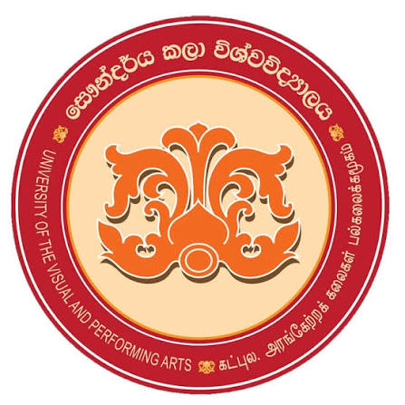

UNIVERSITY OF THE VISUAL AND PERFORMING ARTS

HISTORY OF UNIVERSITY OF THE VISUAL AND PERFORMING ARTS
- 1893: History traces back to the technical school established in Maradana where drawing and craft were taught.
- 1949: Formed as the Heywood Institute of Fine Arts under the Department of Education.
- 1974: Became the Institute of Aesthetic Studies affiliated with the University of Ceylon.
- 2005: Upgraded to a fully-fledged independent university as the University of the Visual and Performing Arts.
AVAILABLE FACULTIES
- Faculty of Visual Arts – දෘශ්ය කලා පීඨය
- Faculty of Dance and Drama – නර්තන හා නාට්ය කලා පීඨය
- Faculty of Music – සංගීත කලා පීඨය
- Faculty of Graduate Studies – පශ්චාත් උපාධි අධ්යයන පීඨය
GO TO OFFICIAL WEBSITE OF UVPA
GO TO HOME PAGE